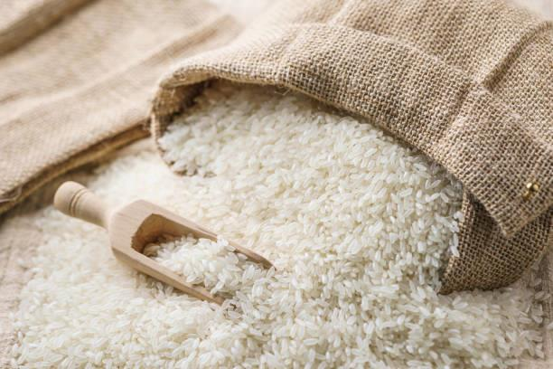

Home / Products / Agriculture / Rice
Rice
Raw and parboiled rice in key broken grades, including IR64, Sona Masoori, Basmati and non-Basmati varieties, prepared with Sortex cleaning for consistent export quality.
Rice — the world's staple grain
Rice is one of the world's most important staple grains, with steady demand across retail, foodservice and processing markets.
NexoGreen supplies raw and parboiled varieties to buyer-specified broken percentage, cleaning requirement and packaging format, supported by dependable export documentation.

Our range of rice
Supplied to buyer-specified grade, broken percentage and packaging. Every lot can be 100% cleaned by Sortex machine.
Raw Rice
Available at 5%, 20% or 25% broken — or 100% broken.
Parboiled Rice
Available at 5%, 20% or 25% broken.
IR64 Rice
Supplied as IR64 raw or parboiled rice.
Sona Masoori Rice
Supplied to buyer-specified grade and packaging.
Basmati & Non-Basmati Rice
Both Basmati and non-Basmati rice supplied for export.
100% Sortex-Clean
We can arrange supplies of 100% clean rice sorted by Sortex machine.
Rice at a glance
Rows marked PLACEHOLDER are stand-in values — confirm the final figures with the trade desk before publishing.
| HS Code | 1006 30 |
|---|---|
| Product forms | Raw rice, parboiled rice |
| Broken grades | 5%, 20%, 25% — or 100% broken |
| Varieties | IR64, Sona Masoori, Basmati, non-Basmati |
| Cleaning | Sortex machine (100% clean available) |
| Moisture (max) | PLACEHOLDER — e.g. 14% |
| Crop year | PLACEHOLDER |
| Packaging | PLACEHOLDER — bag sizes / branding |
| Minimum order (MOQ) | PLACEHOLDER |
| Loading port | PLACEHOLDER |
| Payment terms | PLACEHOLDER |
| Lead time | PLACEHOLDER |
Source export-grade rice at scale
Tell us your variety, broken grade, destination port and target volume — we'll handle Sortex cleaning, grading, documentation and delivery.